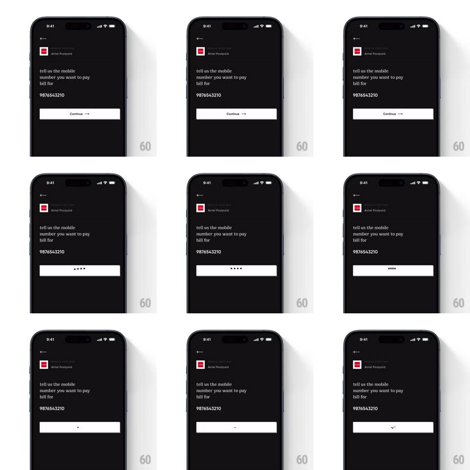

Media
Frame-by-frame

Rebuild this interaction 1:1: CRED's button loading sequence - on a dark bill-pay screen, the white Continue button's label fades out, five small dots pulse briefly, the dots converge into a single centered dot, and that dot resolves into a downward tick/chevron as the action completes.

Rebuild this interaction 1:1: CRED's button loading sequence - on a dark bill-pay screen, the white Continue button's label fades out, five small dots pulse briefly, the dots converge into a single centered dot, and that dot resolves into a downward tick/chevron as the action completes.
## Integration
Integration: stack-agnostic spec - springs given as stiffness/damping, timed motions as duration + curve; map every value to your framework and animation library of choice.
## Scene
Dark screen ("tell us the mobile number you want to pay bill for", Airtel Postpaid header, number "9876543210"). A full-width white Continue button with an arrow sits below the input.
## Motion spec
Pattern: button label -> dots -> single dot -> tick.
- Tap: the "Continue →" label fades out (150ms); five dark dots appear centered, pulsing opacity in a left-to-right wave (~600ms loop, up to 3 passes).
- The five dots slide inward and merge into one centered dot (250ms, ease-in-out).
- The single dot morphs into a small downward chevron/tick (dot stretches vertically ~200ms, then arms fold out, ~150ms).
- The button then completes its action (screen transition follows separately).
## Calibration
- Each phase is discrete and readable - no overlap between the dots merging and the tick forming.
- Keep the dots dark gray on the white button; the final tick is darker still.
## Reduced motion
Label crossfades directly to the tick (250ms), skipping the dot stages.
## Don't miss
- The merge is a physical convergence - dots translate to center, they do not just fade out and spawn one.
- The final glyph is a small downward chevron, not a checkmark.